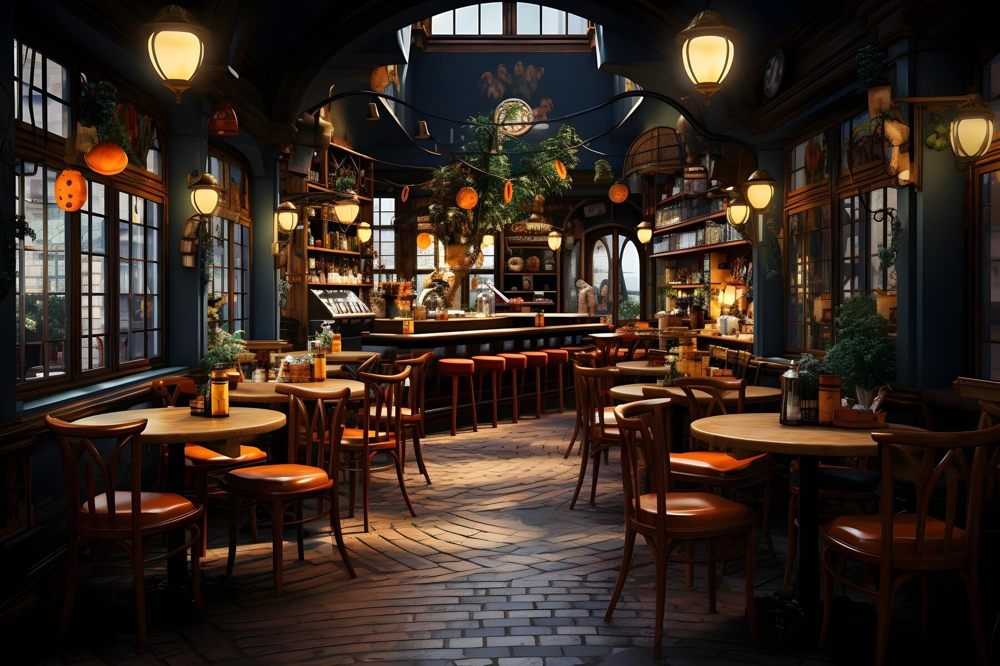

Our Mission
Crafting culinary delights with purrfection, we, the feline proprietors, welcome you to a whisker-licking experience at Feline Feast. With a dedication to playful innovation and an unwavering commitment to quality, we aim to whisker you away on a gastronomic journey that tantalizes the senses and leaves a lasting impression on your palate. From our scratch-made delicacies to our warm and inviting atmosphere, we invite you to join us as we celebrate the art of fine dining, one meow at a time.
Awards
"Earth's Best Restaurant of 2023"
-Earth's Top 10 Restaurants
"Milky Way's Most Outstanding Restaurant of 2023"
-Milky Way's 50 Best Restaurants
"Best Cat Owned Restaurant of 2024"
-Cat's Choice Awards
"Best Restaurant of All Time"
-Everyone
Our History
| Our Journey (1987-1994) |
Welcome to the flavorful world of Feline Feast! Our story begins in the vibrant culinary landscape of New York City in the late 1980s. It was during this time that our founders, Mei Chen and James Thompson, crossed paths while pursuing their culinary passions at the renowned Culinary Institute of America. |
|---|---|
| Vision Takes Shape (1994-1995) |
After years of exploring diverse cuisines and honing their culinary skills, Mei and James envisioned a restaurant that would blend the bold flavors of Asia with the refined techniques of the West. In 1995, their dream became a reality with the opening of Feline Feast. |
| Crafting Culinary Excellence (1995-1996) |
The early days at Feline Feast were dedicated to crafting an innovative menu that would showcase the best of both worlds. Mei and James meticulously developed signature dishes like our "Szechuan Duck Confit with Truffle Risotto" and "Wasabi-Crusted Filet Mignon," setting the stage for a culinary journey unlike any other. |
| Acclaimed Fusion Cuisine (1997-2000) |
As word spread about our unique fusion offerings, Feline Feast garnered critical acclaim and a loyal following of food enthusiasts. Our commitment to bold yet balanced flavors captured the hearts and palates of diners seeking extraordinary dining experiences. |
| Expanding Horizons (2001-2005) |
Buoyed by our success, we expanded our footprint, bringing the Feline Feast experience to major cities across the country. Our influence extended beyond our walls, inspiring a new wave of fusion cuisine and culinary creativity. |
| Continuing Excellence (2006-Present) |
Today, Feline Feast remains a beacon of culinary innovation and excellence. Our commitment to pushing boundaries and crafting unforgettable fusion dishes continues to define us. Join us on a journey of flavors that transcend borders and celebrate the art of fusion cuisine. |